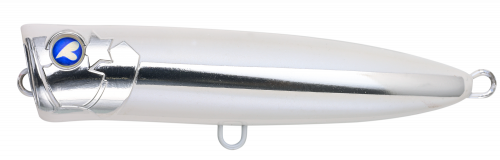
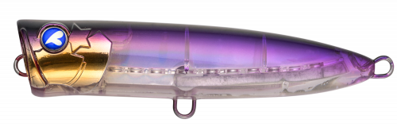
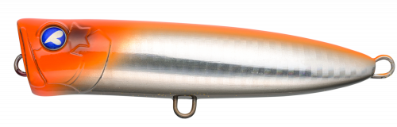
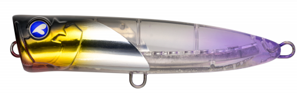
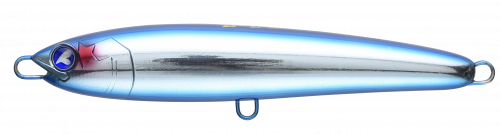

ガチポップ100
（GACHIPOP 100）
ガチポップ100はBlueBlue（ブルーブルー）のポッパーです。
小さめのシルエットながら、大きなカップで水をしっかりつかんでパワフルなスプラッシュを出す王道のポッピングポッパー。水面が荒れてトップウォーターが扱いにくい状況でも操作しやすく、浮力をギリギリまで抑えて自重を増やしているので、ポッパーとしては圧倒的に飛びます。

画像出典:BlueBlue公式HP
スペック
- メーカー
- BlueBlue（ブルーブルー）
- タイプ
- ポッパー（フローティング）
- 全長
- 100mm
- 自重
- 26g
- フック
- #2×2
- リング
- #4
- ターゲット
- 青物・シーバス
- 価格
- 2,150円（税別）
▼今すぐチェック

ガチポップ100の特徴
見切られにくい小さめのシルエットで、超パワフルにポッピング
-
荒れた水面でもパワフルなポッピング
大きなカップで水をしっかりつかみ、高いスプラッシュを出せます。カップを浅めに設計しているので、水面が荒れていてもエラーアクションが少なく操作しやすくなっています。
-
ポッパーとしては圧倒的な飛距離
浮力をギリギリまで抑えて自重を増やしているため、従来のポッパーより遠くまで投げられます。今まで届かなかったナブラにも届きます。
-
ミスバイトが少なく大物も安心
浮き姿勢が垂直に近く、テールが細いので魚の口に吸い込まれやすい設計。大型フックと貫通ワイヤーで、大物が掛かっても安心です。
ガチポップ100の使い方
基本はワンピッチジャーク。ロッドを軽くあおってポッピングさせ、スプラッシュでアピールします。
ナブラが出ているときは連続ポッピングで水面を騒がせ、魚が見切るようならポッピングの間にポーズを入れて食わせの間を作りましょう。
ガチポップ100の得意な状況
ショアからの青物狙いで、ナブラが出たときや水面を意識した魚がいるとき。ベイトが小さくて大きなトップに反応しないときや、波があってほかのトップが扱いにくいときに向いています。
ワンポイント
ベタ凪のときや、もっとナチュラルに誘いたいときは、同じBlueBlueのダイビングペンシル「ガチペン130」とローテーションするのがおすすめです。
ガチポップシリーズの使い分け
| モデル | 全長／自重 | 得意な場面 |
|---|---|---|
| ガチポップ60 | 60mm／7g | 小型の回遊魚やシーバスなどライトゲームに |
| ガチポップ100 | 100mm／26g | ショアの青物狙いの基準サイズ（本記事のモデル） |
| ガチポップトゥリーパ190 | 190mm（全長215mm）／60g | 大型青物狙いのオフショア・磯向けモデル |
ガチポップはサイズで狙う魚とタックルが変わります。使うタックルとベイトの大きさで選びましょう。
人気カラー
公式ラインナップから4色を紹介します（カラー名は公式の表記のまま）。

#04 蒼白ベイト青白いナチュラルカラー。澄み潮やベタ凪で見切られにくくしたいときに。

#09 デンジャーパープルパープル系の個性派カラー。朝夕のマズメや曇りの日に。

#27 エクストリームキャロットオレンジ系の目立つカラー。ルアーの位置を見ながら操作したいときに。

#37 フラッシュカーズゴールドの頭とクリアパープルのボディ。日中のフラッシングで見せたいときに。
画像出典:BlueBlue公式HP
ガチポップ100に似ているルアー
-
 ポップクイーンS105
マリア
詳細はこちら＞
ポップクイーンS105
マリア
詳細はこちら＞
全長105mm・自重30gのシンキングポッパー。同じクラスで、もっと遠くまで飛ばしたいときに。
-
 ポップクイーンS80
マリア
詳細はこちら＞
ポップクイーンS80
マリア
詳細はこちら＞
全長80mm・自重19gのシンキングポッパー。もう一回り小さいシルエットで見せたいときに。
-

ガチペン130 ブルーブルー 詳細はこちら＞同じBlueBlueのダイビングペンシル。ポッピングで出ないときに、ダイブで誘いたいときに。